押すだけで、
「今日も元気」が家族に。
ご本人はボタンを押すだけ。家族は、ようすと予定をいつでも見られます。
- ☀️押すだけで
家族に届く - 📅予定は
LINEでも - 🔒見られるのは
家族だけ
はじめかた家族のスマホ
ダウンロードはいりません。ホームページを開くだけで使えます。まず、家族のスマホで始めます。
1まいにこを開いて、使い方を選ぶ
上の アプリを開く を押します。
家族のスマホなら 本人と家族が使う を選びます。
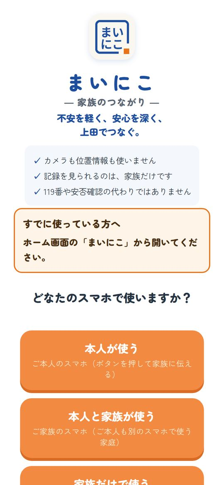
2お約束を読んで、同意する
3つのお約束を読み、この内容で進む。
次の画面で「すべてに同意します」にチェックを入れて 同意してはじめる。
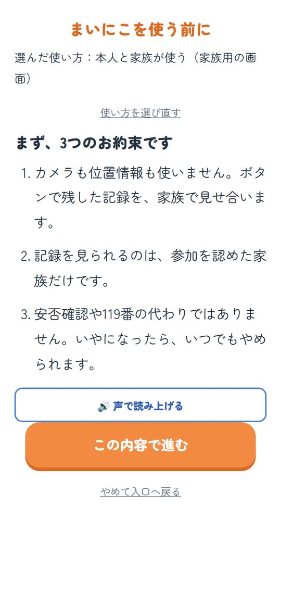
3名前を入れて、家族をつくる
家族の中での呼び名（例：りえ）を入れて つぎへ。
ご本人に説明したことにチェックを入れ、ご本人と一緒に初期設定する を押します。
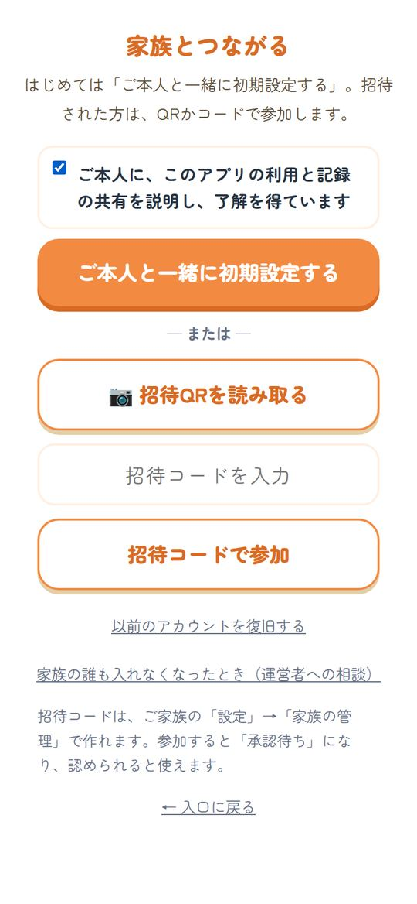
4ホーム画面に追加する
次からすぐ開けるように、スマホのホーム画面にアイコンを置きます。
- iPhone：Safariの下の共有ボタン（□に↑）→「ホーム画面に追加」
- Android：右上の︙ →「ホーム画面に追加」
ご本人のスマホをつなぐ
家族が招待コードを作り、ご本人のスマホで入れます。
1招待コードを作る家族
「⚙️ 設定」→「家族の管理」→ 招待コードを作る。
8文字のコードとQRが出ます。
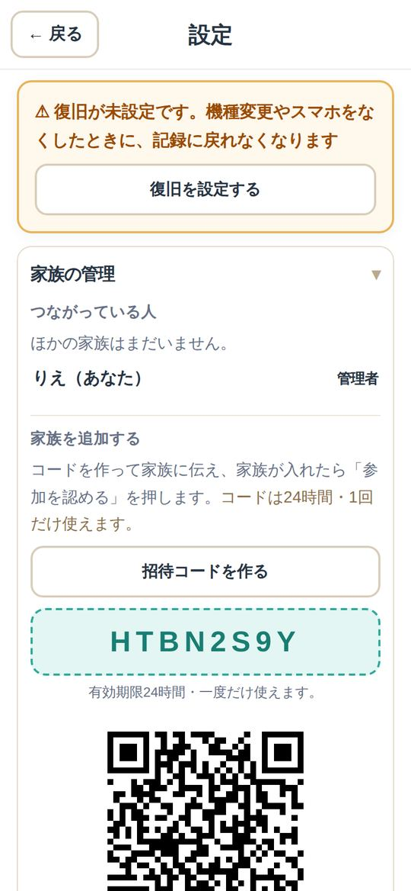
2ご本人のスマホでコードを入れるご本人
ご本人のスマホでまいにこを開き、本人が使う → 同意 → コードを入れて 招待コードで参加。
QRを読むこともできます。
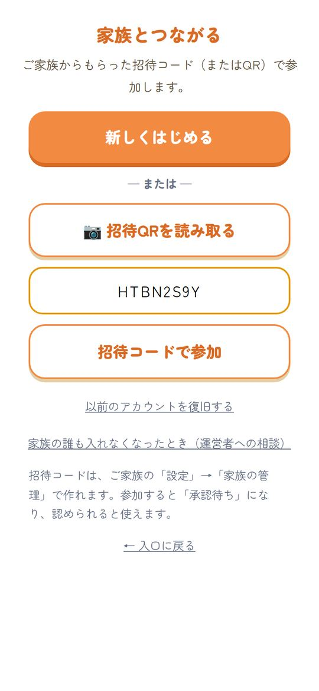
3「参加を認める」を押す家族
家族のホームに出る 参加を認める を押せば完了です。
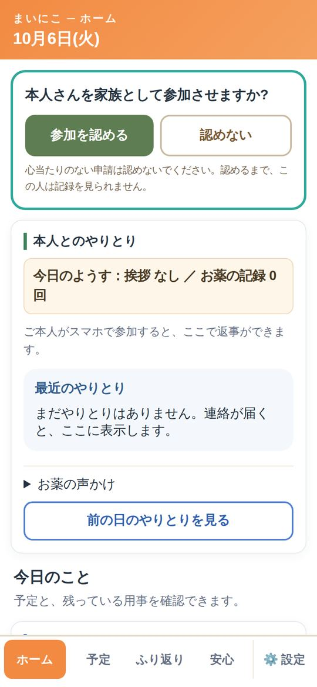
ご本人の毎日ご本人
大きなボタンを押すだけ。押したことが家族に届きます。
1朝は「おはよう」
☀️ おはよう を押すと、家族に届きます。今日の調子も選べます。
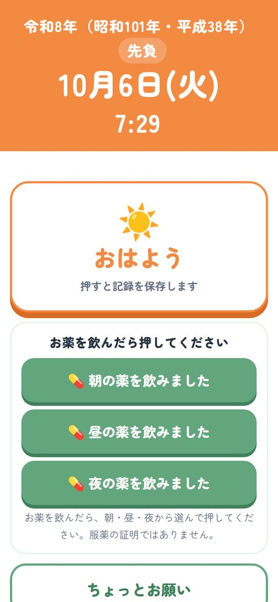
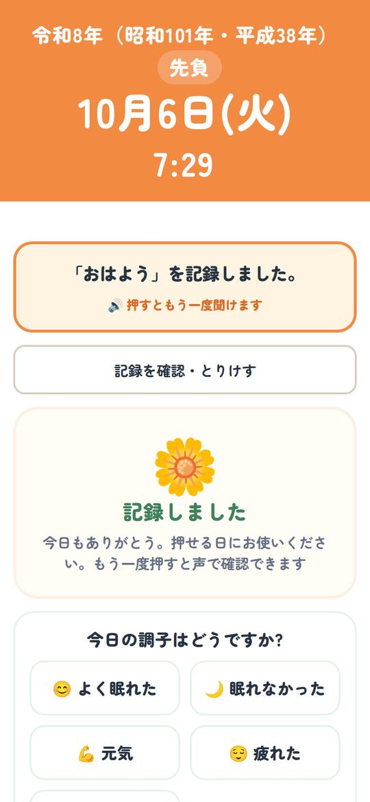
2お薬を飲んだら押す・お願いを伝える
💊 朝の薬を飲みました を押すと記録されます。
ちょっとお願い から「話したい」「買い物をお願い」などを送れます。
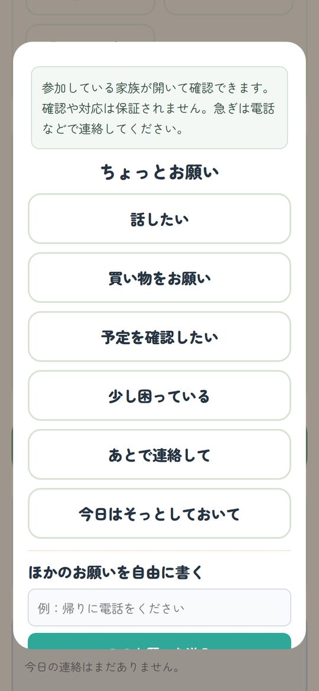
家族が見る・返事する家族
ホームの「本人とのやりとり」に、ご本人が押したことが届きます。
1今日のようすを見る
「今日のようす：挨拶 あり／お薬の記録 1回」のように、ひと目で分かります。
2ボタンで返事する
お願いには 今から対応するね などを押すだけ。返事はご本人の画面に出ます。
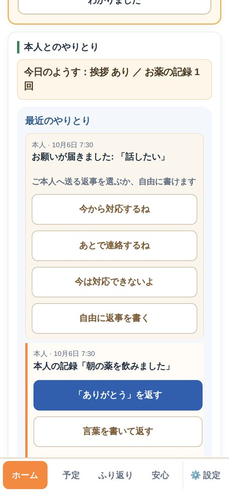
予定を入れる・LINEで知らせる
通院やデイサービスの日を入れると、ご本人の画面に「あと何日」と出ます。
1「＋ 予定を入れる」
「予定」のページで ＋ 予定を入れる。予定名・日付・時間を入れて 保存する。
2LINEでも知らせる（使う人だけ）
「LINEで知らせる日時」を入れると、その時間にLINEで届きます。前日の夜7時 なども選べます。
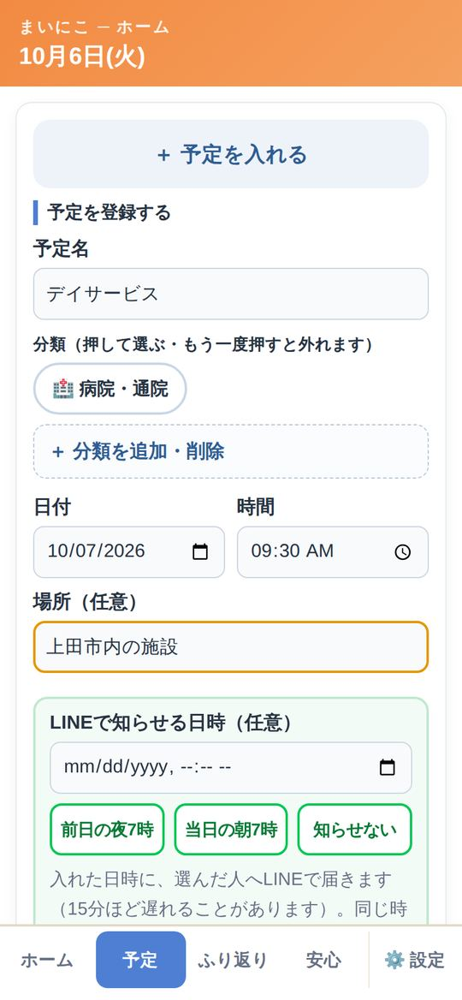
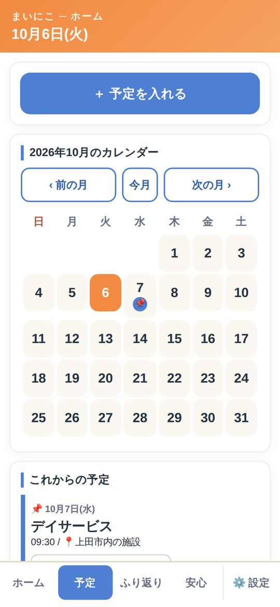
ふり返り
日ごとの記録や、月のまとめを見返せます。通院のときにも役立ちます。
1「ふり返り」を開く
カレンダーで日を選ぶと、その日の記録が出ます。誰が・いつ押したかが分かります。
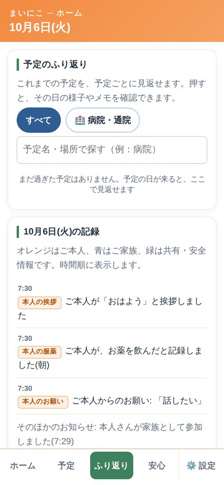
ひと声のきっかけ
押されなかった日に、家族の1人へ「声をかけてみませんか」とそっと届きます。
1家族が設定する
「設定」→「ひと声のきっかけ」で 使う にチェック。時刻と担当の家族を決めます。
2ご本人が「はい」を選ぶ
ご本人の画面に確認が1回出ます。「はい」を選んだときだけ動きます。
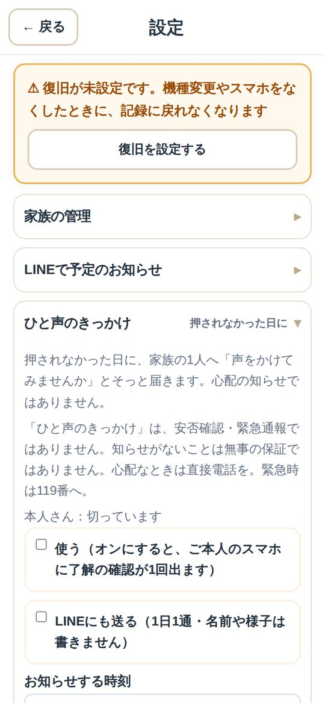
もしもの備え（安心）
「安心」のページに、もしものときに使うものをまとめています。
- お薬手帳：写真を保存して、すぐ見せられます
- 相談先を探す：上田市の相談先にすぐたどり着けます
- おまもりタグ：名前を出さずに、家族へ知らせる紙のQR
- 災害用QR：避難のときに見せる連絡先
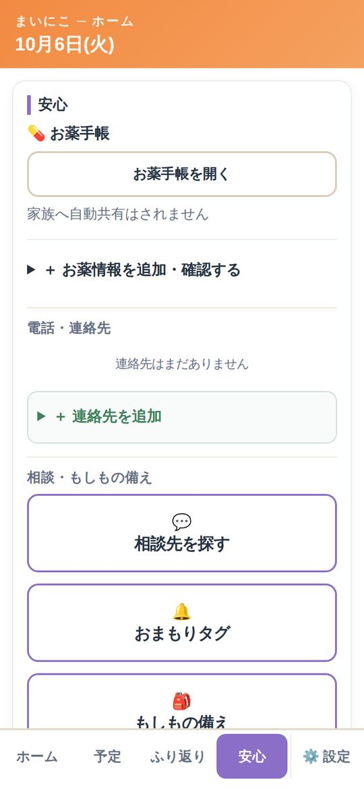
スマホを替える・なくす前に
最初に1回だけ「復旧の設定」をしておくと、新しいスマホでも記録に戻れます。
1「復旧を設定する」
「設定」→「機種変更・アカウントの復旧」で、メールアドレスとパスワード（12文字以上）を入れます。届いたメールのリンクを開けば完了です。
2新しいスマホで戻る
新しいスマホでまいにこを開き、入口の 以前のアカウントを復旧する から入ります。
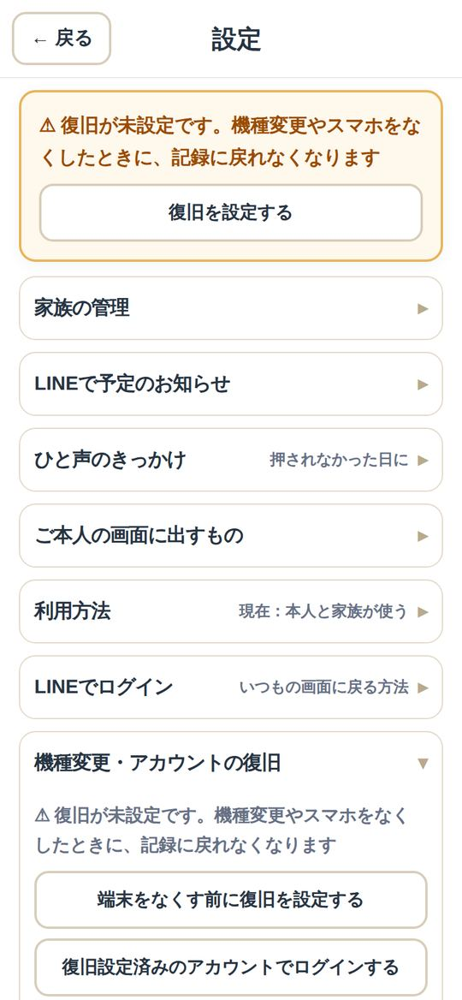
⚠️ 注意してほしいこと
- 119番・110番の代わりではありません。急ぐときは直接電話してください。
- お知らせは、遅れたり届かなかったりすることがあります。知らせがないことは、無事の保証ではありません。
- ご本人がいやなときは、使わないでください。家族だけで決めないでください。
- 招待コード・QR・6けたの番号は、人に見せたり教えたりしないでください。
- ホームに「🔐 安全のお知らせ」が出て、心当たりがないときは、すぐ家族で確かめてください。
よくある質問
お金はかかりますか？
試験運用中は無料です（スマホの通信料はかかります）。
ご本人がスマホを持っていません
入口で「家族だけで使う」を選ぶと、家族が記録する使い方ができます。
押し忘れたら、どうなりますか？
何も起きません。催促もしません。ひと声のきっかけを使っている場合だけ、家族の1人に「声をかけてみませんか」と届きます。
記録を消したい・やめたい
いつでもやめられます。「設定」→「データの削除・利用の終了」から、記録やアカウントを消せます。詳しくは利用を終えるとき。
動かない・保存できない
電波のよいところで開き直してください。それでも直らないときは困ったときを見てください。